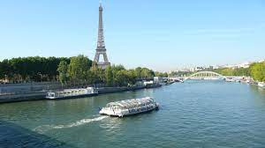

Despre Barcelona
Despre Lisabona
Lisabona (în portugheză Lisboa) este capitala Portugaliei
și are 544,851 locuitori (2.900.000 în zona metropolitană,
27% din populația țării) conform statisticilor din anul
2021. Este plasată pe coasta de vest a țării, la Oceanul
Atlantic, unde râul Tejo (Tagus), se varsă în ocean. Inima
orașului este „Baixa” sau „Orașul de Jos”, zonă unde se
află Castelul São Jorge și Catedrala Santa Maria Maior. Cel
mai vechi cartier al orașului este Alfama, aproape de râul
Tejo.
Lisabona este orașul cel mai bogat din Portugalia cu un PIB
pc superior mediei europene. Portul din Lisabona este cel
mai activ a coastei atlantice europene. Echipat cu trei
canale pentru bărci turistice: Alcantara, Rocha Conde
Obidos și Santa Apolónia.
Lisabona este o destinație plină de culoare și vibrantă.
Renumit pentru dispoziția sa caldă și însorită, orașul este
binecuvântat cu o bogăție de monumente istorice, muzee de
clasă mondială și o serie de alte lucruri fabuloase de
făcut, care pot fi ușor lucrate într-un singur itinerar sau
mai multe zile . Puteți explora străzile înguste ale
cartierului vechi, vă puteți plimba pe promenada
malului râului sau vă puteți plimba prin parcuri și grădini
pline de verdeață.
Despre Budapesta
Budapesta este capitala Ungariei. Orașul este situat pe
ambele maluri ale Dunării. În partea de est a Dunării se
află Pesta, care ocupă două treimi din suprafață, iar pe
partea de vest se află Buda, cealaltă treime a orașului.
Budapesta are cca. 1,7 milioane de locuitori (est. 1999).
În zilele noastre Budapesta apare ca o capitală renăscută,
ce abundă de monumente și construcții străvechi. Pe
terenurile rămase goale încă din vremea războaielor s-au
construit bănci și case de birouri moderne, dar s-a avut
grijă de aspectul combinării lor cu clădirile de la
începutul secolului XX. sau și mai vechi.
Pe aria budapestană a Dunării se află trei insule. Dintre
acestea cea mai mare este Insula Csepel din sudul orașului,
partea nordică a acestuia constituind sectorul al XXI-lea,
a cărui nume oficial este și Csepel, exact ca numele
insulei. Ca mărime este urmat de Insula Margareta, cu multe
bogății istorice, iar cea mai mică ca mărime este Insula
Óbudei, zisă și Hajógyári-sziget (Insula șantierului naval)
. În imediata vecinătate spre nord a zonei admistrative a
orașului este Insula Szentendrei, care ține până Dunakanyar
(Curbura Dunării).
Despre Berlin
Berlin este capitala Germaniei, fiind cel mai mare oraș al
țării cu aproximativ 3,4 milioane de locuitori și acoperind
o suprafață de aproximativ 892 km². Berlinul este, în
același timp, și unul din cele 16 landuri federale, având
guvern de land propriu, numit „Senat”. Poziția sa pe hartă
este aidoma unei insule înconjurată complet de landul
Brandenburg. Este traversat de râurile Spree și Havel.
Berlin este situat în nord-estul Germaniei, pe un teritoriu
cu regiuni păduroase mlăștinoase, cu o topografie în primul
rând netedă, parte a vastei Câmpii a Europei de Nord, ce se
întinde din nordul Franței până în vestul Rusiei.
Infrastructura transportului Berlinului este foarte
complexă, asigurând o gamă diversă de mobilitate urbană.
Un număr de 979 poduri traversează 197 km (122 mi) de
căi navigabile din interiorul orașului. 5.422 km (3.369 mi)
de drumuri trec prin Berlin, din care 77 km (48 mi) sunt
autostrăzi („Autobahn”).[127] În 2013, 1.344 milioane de
autovehicule au fost înregistrate în oraș. Cu 377
mașini per 1000 de rezidenți în 2013 (570/1000 în Germania,
Berlin ca oraș global occidental are unul dintre cele mai
mici numere de mașini per capita.
Despre Paris
Paris este capitala și cel mai mare oraș din Franța. Orașul
este traversat de fluviul Sena, în nordul Franței, în
mijlocul regiunii Île-de-France (cunoscută și ca regiunea
Paris). Orașul în limitele sale administrative (cele 20 de
arondismente) este în mare parte neschimbat din anul 1860,
având o populație de 2.211.297 locuitori (ianuarie 2008),
iar zona metropolitană Paris are o populație de 12.089.098
locuitori (ianuarie 2008). Este una dintre cele mai
populate zone metropolitane din Europa. Parisul a fost unul
dintre cele mai mari orașe ale lumii occidentale pentru
aproape 1000 de ani, înainte de secolul al XIX-lea și cel
mai mare oraș din lume între secolele XVI-XIX.
Parisul este astăzi unul dintre cele mai mari centre
economice și culturale din lume, iar influența sa politică,
educativă, divertisment, mass-media, modă, știință și arte
contribuie la considerarea sa drept unul dintre cele mai
importante orașe din lume.
Parisul este deservit de două aeroporturi: Orly, la sud de
Paris, și Charles de Gaulle, la nord de Paris, situat în
localitatea Roissy-en-France, unite de linia B a rețelei
RER. Parisul este dotat cu o rețea densă de metrou, numit
Métro. De asemenea, orașul este străbătut de RER (Rețeaua
Expresă Regională), ce face legătura între diferitele
departamente din jur, și în zonele periferice de tramvai.
În plus există o rețea de căi ferate: din cele 6 gări
pariziene pleacă zilnic trenuri pentru navetiști, trenuri
naționale și TGV-uri (Train à Grande Vitesse) (numit Thalys
sau Eurostar pentru Belgia, Olanda, Germania, respectiv
Marea Britanie).
Despre Londra
Londra (în engleză London) este capitala Angliei și a
Regatului Unit. Este cel mai important centru politic,
financiar (datorită City-ului), cultural și artistic al
Regatului Unit, și unul dintre cele mai importante orașe
ale lumii, fiind, alături de New York, singurul oraș global
Alpha++. Bursa de Valori a Londrei este cea mai mare din
Europa, printre cele mai mari din lume și cel mai relevant
indicator al pieței monetare la nivel mondial.
Populația Londrei este de 7.421.229 locuitori (la 1
ianuarie 2005) în Londra Mare, cărora li se adaugă alte
câteva milioane din zona metropolitană. Există o imensă
diversitate de etnii, culturi și religii, Londra fiind unul
din cele mai cosmopolite orașe din Europa și din lume. Aici
locuiesc, permanent sau temporar, mulți dintre cei mai
bogați oameni ai lumii.
Rețeaua de transport public, administrată de Transportul
pentru Londra (TfL), este una dintre cele mai extinse din
lume, dar se confruntă cu probleme de congestie și
fiabilitate. Un program mare de investiții de 7 miliarde de
lire sterline (10 miliarde de euro) vizează îmbunătățirea
acestei situații. Londra a fost apreciată ca orașul cu cel
mai bun transport public. Ciclismul este un mod din ce în
ce mai popular pentru a te plimba în jurul Londrei.